Names & categories
Generic vs brand, prescription vs over the counter.
Learning medications by category
Medications in the same category (class) usually work the same way, so they share therapeutic effects, adverse reactions, contraindications and administration points. It's easier to learn the category than hundreds of single drugs. The prototype is the drug in the category that providers prescribe most, and it's the one to know in the most detail.
Generic vs brand (trade) names
Generic
- The "official" name, given by the company that first develops the drug
- Always written in lowercase
- Only one generic name per medication
- Same chemical composition (active ingredient) as the brand-name drug
- Usually less expensive
Brand / trade
- The commercial (proprietary) name a manufacturer gives it
- Capitalized, often with ® after it
- One drug can have several brand names (ibuprofen is Advil, Motrin, Nuprin…)
- The FDA (U.S. Food and Drug Administration) has confirmed therapeutic equivalence with the generic
- A drug starts out under its brand name while it's protected by a patent. Once the patent expires, other companies can make a generic form.
- Generic and brand forms have the same chemical composition and the same effects, and there's no difference in the potential for abuse or dependence. With the provider's OK, the generic can be substituted for the brand.
- On a label, the brand name is usually large and bold; the generic name is smaller, often under it or in parentheses. Drugs also have chemical names, which are rarely used.
| Generic | Brand / trade |
|---|---|
| acetaminophen | Tylenol® |
| ibuprofen | Motrin®, Advil® |
| docusate sodium | Colace® |
| hydromorphone | Dilaudid® |
| pantoprazole | Protonix® |
| lansoprazole | Prevacid® |
| diphenhydramine | Benadryl® |
| loratadine | Claritin® |
The NCLEX-RN uses generic names. If a question uses a brand name, the generic name is given with it.
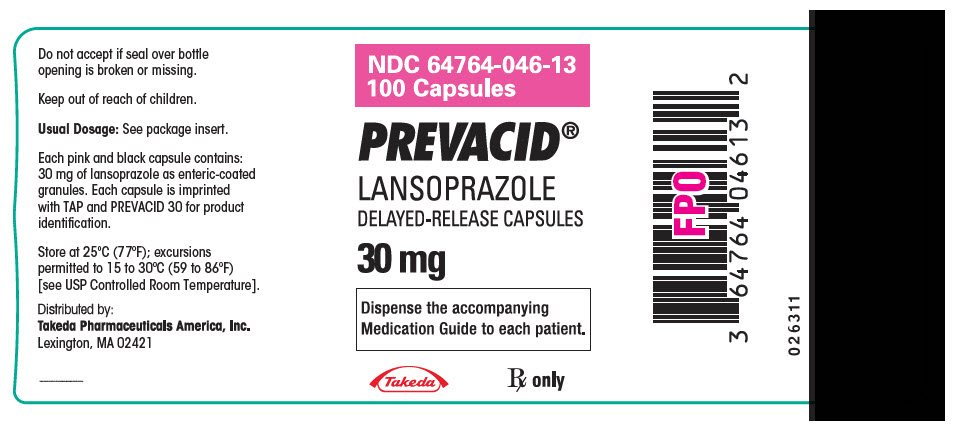
Labels often print the generic name in capitals (LANSOPRAZOLE here). When you write it, the generic name is lowercase: lansoprazole.
Prescription vs over the counter
Safety decides which group a drug is in.
Prescription (Rx)
- The FDA identified it as potentially harmful if taken without medical supervision
- Needs a prescription from a licensed provider (physician, nurse practitioner, physician assistant)
- Examples: antibiotics (ceftriaxone), antihypertensives (captopril), diuretics (furosemide), opioid analgesics (fentanyl)
Over the counter (OTC)
- The FDA designated it relatively safe to take without supervision
- Bought in stores, pharmacies or online
- Examples: acetaminophen, ibuprofen, diphenhydramine, loratadine, cimetidine (Tagamet®)
As more is learned about a drug over time, a prescription drug can be moved to over the counter.
Count vitamins, supplements and herbal remedies as medications, even though the FDA doesn't regulate them. They can interact with prescribed drugs or be taken wrong and cause more harm than good, so always ask about them in the medication history.
Clients sometimes bring their own medications from home. Those go to the hospital pharmacist to approve before they're used.
Quick check
How many generic names can a medication have?
One. It can have several brand names.
A client asks whether the generic is weaker than the brand. What's true?
No. The generic has the same chemical composition and the same effects, and the same abuse potential. It's usually cheaper.
Which name does the NCLEX use?
The generic name. A brand name, if used, comes with the generic.
Why ask about herbal supplements?
They count as medications and can interact with prescribed drugs, even though the FDA doesn't regulate them.
Forms & routes
Pharmaceutics: how the form of a drug changes how fast it works.
Pharmaceutics
Pharmaceutics is the science of how a medication's form affects how it dissolves, how fast it's absorbed and so how soon it starts to work.
| Route | Where it goes | Examples |
|---|---|---|
| Oral (PO, by mouth) | Swallowed and absorbed in the GI (gastrointestinal) tract | Tablets, capsules, liquids such as acetaminophen or amoxicillin suspension |
| Sublingual (SL) | Under the tongue | Nitroglycerin tablets for chest pain |
| Buccal | Between the cheek and gum | Buccal tablets and films (for example, some pain or nausea medications) |
| Intramuscular (IM) | Into a muscle | Flu shot, epinephrine for anaphylaxis |
| Subcutaneous (SQ or SubQ) | Into the fatty tissue under the skin | Insulin, heparin, enoxaparin |
| Intravenous (IV) | Straight into a vein | IV antibiotics such as vancomycin, IV fluids |
| Topical / transdermal | On the skin | Creams and ointments (local effect); patches such as nicotine or fentanyl (systemic effect) |
| Mucous membranes | Eyes, ears, nose, throat | Eye drops, ear drops, nasal spray, throat lozenges |
| Rectal / vaginal | Rectum or vagina | Acetaminophen or bisacodyl suppositories; antifungal vaginal cream |
| Inhaled | Into the lungs | Albuterol inhaler, nebulizer treatments |
Routes are grouped as parenteral (by injection: IM, subcutaneous, intradermal, IV, intrathecal, epidural) and nonparenteral (oral, sublingual, buccal, topical, transdermal, eye, ear, nose, rectal, vaginal).
Oral forms that change how a drug is released
| Form | What it does |
|---|---|
| Enteric-coated (EC) | Coating doesn't dissolve until the tablet reaches the small intestine, which protects the stomach lining |
| Extended release (ER, XL, XR), sustained release (SR), sustained action (SA) | Releases the drug slowly over time, often 12 to 24 hours, so it can be dosed once or twice a day |
| Immediate release | Releases the drug right after it's swallowed |
| Orally disintegrating tablet (ODT) | Dissolves in the mouth |
| Scored tablet | Has a line across the middle so it can be split into two equal parts |
Never crush capsules or extended- or sustained-release forms. (The full do-not-crush list is in Giving oral meds.)
Injections: how fast they're absorbed
| Route | Absorption | Onset |
|---|---|---|
| IV | Immediate and complete | Immediate |
| Subcutaneous and IM |
| Varies |
Topical and transdermal drugs deliver a steady amount over a long time: slower onset and longer duration than oral or injected drugs.
Quick check
Where does a buccal medication go?
Between the cheek and gum.
Why is a tablet enteric-coated?
So it dissolves in the small intestine instead of the stomach, which protects the stomach lining.
Which route has immediate and complete absorption?
IV.
A client with poor circulation gets a subcutaneous injection. What happens to absorption?
It's slower.
Pharmacokinetics
What the body does to the drug: ADME.
ADME
"If I were you, I'd remember this." Pharmacokinetics is how a medication moves through the body: Absorption, Distribution, Metabolism, Excretion.
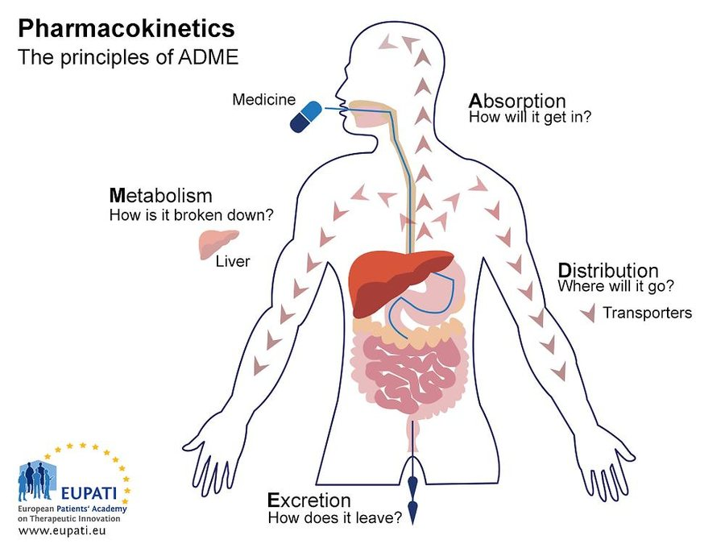
| Phase | Question | Definition |
|---|---|---|
| Absorption | How does it get in? | Movement from the site of administration into the bloodstream |
| Distribution | Where does it go? | Movement by the circulation (body fluids) to the site of action |
| Metabolism | How is it broken down? | Change into a more or less active, more water-soluble or inactive form, mostly by liver enzymes |
| Excretion | How does it leave? | Removal of the drug or its metabolites, mostly by the kidneys |
ADME, in order: the drug gets in, gets around, gets broken down, gets out.
Absorption
How fast a drug is absorbed decides how soon it works; how much is absorbed decides how strong the effect is. The route changes both.
| Route | Barriers to absorption | Absorption pattern |
|---|---|---|
| Oral |
| Varies a lot with:
|
| Sublingual, buccal | Swallowing it before it dissolves lets stomach acid inactivate it | Fast, through the many blood vessels in the mouth's mucous membranes |
| Rectal, vaginal | Stool in the rectum or infectious material in the vagina limits contact with the tissue | Easy; local and systemic effects |
| Inhaled (mouth, nose) |
| Fast, through the capillaries around the alveoli (air sacs) |
| Intradermal, topical |
|
|
| Subcutaneous, IM | No real barrier: capillary walls have large spaces between cells |
|
| IV | No barrier, but the client needs IV access |
|
Distribution
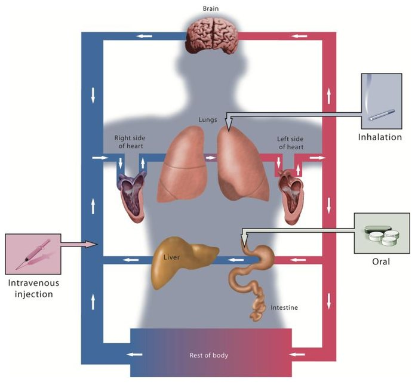
- Circulation: anything that cuts blood flow (peripheral vascular disease, heart disease) delays distribution.
- Cell membrane permeability: the drug must pass through tissues to reach its target. Fat-soluble drugs, or drugs with a transport system, can cross the blood-brain barrier and the placenta.
- Plasma protein binding: drugs bind to proteins in the blood, mainly albumin. Only the unbound drug can leave and act. Two drugs competing for the same binding sites can cause toxicity, and low albumin (malnutrition, older age) leaves more free drug circulating.
Metabolism
Metabolism happens through enzymes, primarily in the liver. It also happens in the kidneys, lungs, intestines and blood.
Also called biotransformation: the drug's structure is changed, and the new form is a metabolite.
What affects metabolism
- Age: the body slows down. Liver metabolism tends to drop with age, so older adults often need smaller doses to avoid buildup. Infants also metabolize less.
- Similar metabolic pathways: two drugs broken down the same way compete, so one or both build up. Spacing them apart can help.
- Nutritional status: malnutrition (and dehydration) can leave the body short of what it needs to make metabolizing enzymes.
- More metabolizing enzymes (from some drugs): breaks the drug down faster, so the dose may need to go up.
- First-pass effect (below).
First-pass effect
Oral drugs go from the intestines straight to the liver first, which breaks down part of the dose before it reaches the rest of the body. That reduces how much active drug is left, and it's one reason a provider may choose IV over PO.
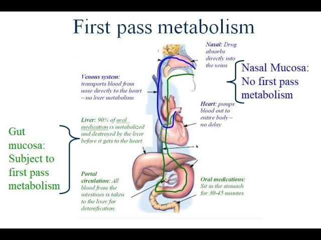
Routes that bypass the first-pass effect: sublingual, buccal, IV, nasal, inhaled, transdermal and other injected routes. They reach the bloodstream without going through the liver first. Drugs with a high first-pass effect need one of these nonenteral routes.
Outcomes of metabolism
- Inactivates most drugs and makes them easier for the kidneys to excrete
- Activates prodrugs into their active form
- Can raise or lower the therapeutic effect, and raise or lower toxicity
Excretion
- The kidneys are the main site (urine).
- Also the liver (bile), lungs (exhaled), intestines (bowel) and exocrine glands (sweat, saliva, breast milk).
- Excretion prevents toxic buildup and keeps the drug level balanced.
- Factors to consider: dehydration, kidney problems, bowel problems. Drugs that are harmful as they're excreted need careful handling.
- Poor kidney function makes a drug last longer and act stronger, so monitor BUN (blood urea nitrogen) and creatinine. Doses may be lowered for kidney impairment, common in older adults.
- Drugs excreted in breast milk can reach a breastfeeding infant.
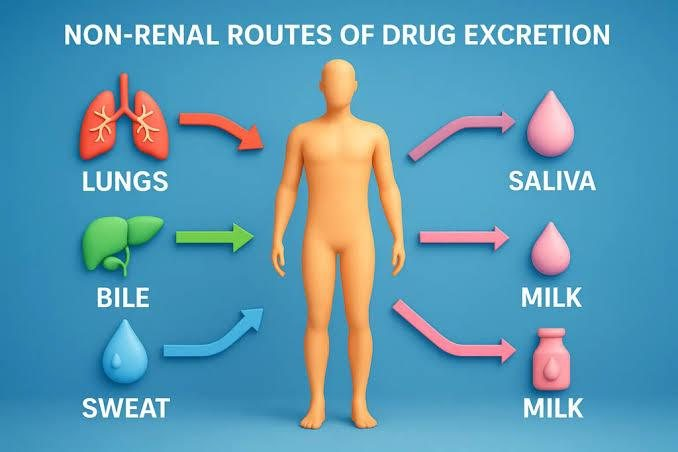
Higher or lower dose?
May need a higher dose
- More metabolizing enzymes (drug broken down faster)
- Faster renal excretion
- Poor distribution, such as peripheral vascular disease
May need a lower dose
- Liver failure
- Kidney impairment
- Another drug using the same metabolic pathway
- Malnutrition
- Older age
Quick check
Where does most drug metabolism happen?
The liver.
Why might a provider order a drug IV instead of PO?
An oral drug goes through the liver first (first-pass effect), which reduces how much active drug reaches the body. IV skips the liver.
Name two routes that bypass the first-pass effect.
Any two of sublingual, buccal, IV, nasal, inhaled or transdermal.
Which two labs show how well the kidneys excrete drugs?
BUN and creatinine.
A client has low albumin. What happens to a protein-bound drug?
More of it is unbound and active, so the risk of toxicity goes up.
Half-life & drug levels
How long a drug lasts, and how levels are checked.
Half-life
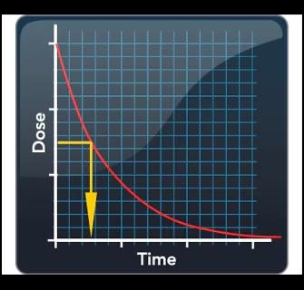
- Half-life (t½) is the time it takes for the amount of drug in the body to drop by 50%.
- It depends on metabolism and excretion, so liver and kidney function change it. Age and fever can change it too.
- It usually takes 4 half-lives to reach a steady (therapeutic) concentration, when intake equals what's metabolized and excreted.
Short half-life
- Leaves the body fast (about 4 to 8 hours)
- Given often, several times a day, or the level drops below the effective level between doses
Long half-life
- Leaves slowly (more than 24 hours), so it can build up and become toxic
- Given less often, often once a day
- Takes longer to reach steady state
Example: phenobarbital has a half-life of about 4 days, so it's given once a day.
Long life, long gap. A long half-life means a long time between doses.
Therapeutic range and index
- Doses aim to keep the blood level between the minimum effective concentration and the toxic concentration. In between is the therapeutic range: effective, not toxic.
- Therapeutic index (TI): the ratio of the toxic dose to the therapeutic dose, a measure of the safety margin.
- High TI: wide safety margin; no routine blood-level checks.
- Low TI: narrow margin; levels need close monitoring.
- Plateau: the drug's blood level during a series of doses.
Peak and trough levels
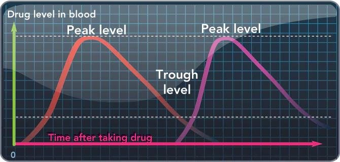
Peak
- The highest level in the blood
- Timing depends on the route: oral peaks about 1 to 3 hours after a dose; IV can peak within 10 minutes (check a drug reference or the pharmacist)
- The drug's full effect should line up with its peak level
Trough
- The lowest level in the blood
- Draw the blood sample immediately before the next dose, whatever the route
Peaks and troughs are checked for drugs that have to stay at a steady therapeutic level to work, such as some antibiotics.
Picture a feeding trough: you check how low it’s gotten right before you fill it again. A peak is the top of the mountain.
Onset, peak and duration
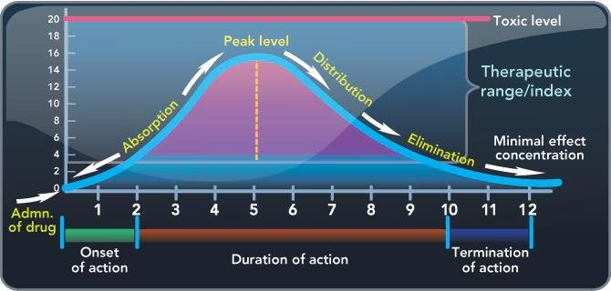
| Term | Meaning |
|---|---|
| Onset of action | Time for the drug to start a therapeutic response |
| Peak effect | Time for the drug to reach its full therapeutic effect |
| Duration of action | How long the therapeutic effect lasts without another dose |
| Termination of action | When the effect ends |
Quick check
When do you draw a trough level?
Immediately before the next dose.
A drug has a long half-life. How often would you expect to give it?
Less often, usually once a day.
A drug has a low therapeutic index. What does that mean for the nurse?
A narrow safety margin, so blood levels need close monitoring.
How many half-lives does it usually take to reach a steady level?
About 4.
Pharmacodynamics
What the drug does to the body.
Agonists and antagonists
Pharmacodynamics is the interaction between a medication and target cells, body systems or organs to produce an effect. Drugs act on receptors, their target sites on or in cells.
| Type | What it does | Examples |
|---|---|---|
| Agonist | Binds to a receptor and activates it, mimicking the body's natural process |
|
| Antagonist | Blocks the usual receptor activity, working against a body process |
|
| Partial agonist | Binds to and activates a receptor, but only partly, for a blunted effect (about 10 to 40% of the full effect) |
|
- Competitive antagonists compete with the agonist for the receptor. Higher doses lower the agonist's effect but rarely block it completely.
- Noncompetitive antagonists block the agonist's access to the receptor. High enough doses can block the response completely.
- Selective drugs act on fewer receptors, so the effects are more limited; less selective drugs cause more widespread effects.
- Some drugs change the cell environment instead: penicillins stop bacteria from building cell walls; sulfa drugs stop bacteria from using folic acid to make DNA and RNA.
Agonist = "Go" (turns the receptor on). Antagonist = "Anti" (blocks it). Partial = part way.
Expected action and therapeutic uses
- The expected pharmacologic action is what the drug does in the body. The indication is the condition it's prescribed for.
- Acetaminophen blocks the chemical messengers that tell the hypothalamus to raise core temperature, so a therapeutic use is reducing fever.
- Many drugs have more than one use:
- Sildenafil (Viagra®) relaxes blood vessels and increases blood flow, so it's also used for pulmonary hypertension.
- Diphenhydramine treats allergies (antihistamine), and is also used for motion sickness (antiemetic), sleep (sedative) and Parkinson's disease (anticholinergic).
If you're not sure why a client is getting a medication, ask before you give it.
Quick check
Morphine activates opioid receptors. Is it an agonist or an antagonist?
An agonist.
Metoprolol blocks cardiac beta receptors. What type of drug is it?
An antagonist (beta blocker).
Why is buprenorphine called a partial agonist?
It activates opioid receptors only partly: enough to stop withdrawal and cravings, without the high.
What's an indication?
The condition a drug is prescribed to treat.
Effects & reactions
Adverse reactions, anaphylaxis, tolerance and toxicity.
Adverse drug reactions (ADRs)
- Therapeutic effect: the intended effect.
- Adverse drug reaction: a nontherapeutic, unintended effect that happens at a therapeutic dose. It can happen at any time, and ranges from annoying to life-threatening.
- Example from the slides: lisinopril for blood pressure can cause a dry, nonproductive chronic cough or angioedema (swelling of the lips, tongue and face).
- Diphenhydramine commonly causes dry mouth and drowsiness; in some older adults, confusion, poor coordination, dizziness or seizures.
- Paradoxical effect: the opposite of the intended effect, such as a sedative causing excitement.
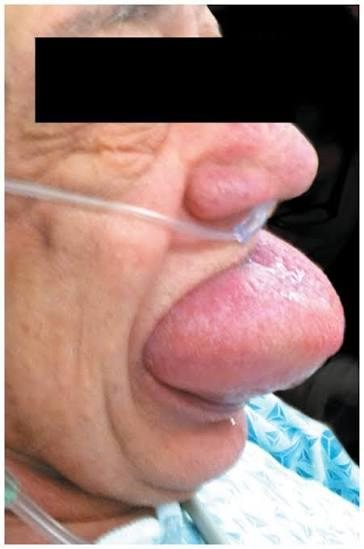
Allergic reactions and anaphylaxis
An allergic reaction is the most severe type of ADR. It can be mild (itching, rash, hives) or life-threatening. After even a mild reaction, the client should avoid the drug: the next exposure can bring a worse reaction.
Anaphylactic shock is the body's exaggerated immune response to a drug: a massive release of histamine. It's a medical emergency that can start almost immediately and progress from mild to severe.
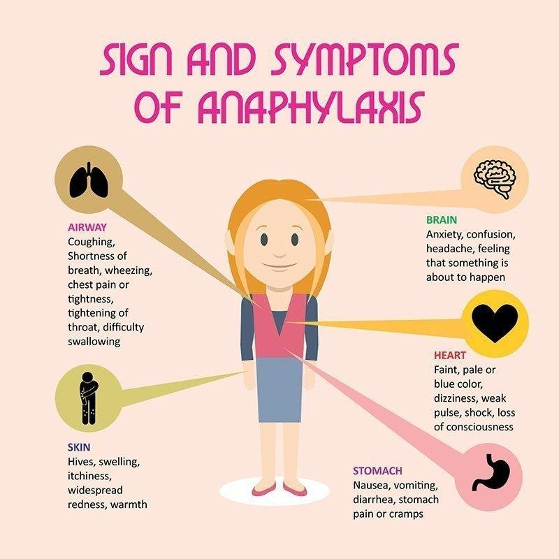
| Area | Signs |
|---|---|
| Airway | Coughing, shortness of breath, wheezing, stridor, chest tightness, throat tightening, trouble swallowing |
| Heart and circulation | Fast heart rate, very low blood pressure, weak pulse, faintness, pale or blue color, shock, loss of consciousness; can lead to cardiac arrest |
| Skin | Hives, swelling of the eyes, face, mouth and throat, itching, widespread redness, warmth |
| Brain | Anxiety, confusion, headache, feeling that something bad is about to happen |
| Stomach | Nausea, vomiting, diarrhea, cramps |
Treatment
- Establish the airway
- Oxygen
- Epinephrine IM: raises blood pressure and opens the airways
- Diphenhydramine: blocks more histamine release
Epinephrine is given IM for anaphylaxis. Listen for stridor: it's usually one of the first signs of anaphylaxis, and it means the airway is closing.
Tolerance, dependence and toxicity
| Term | Meaning |
|---|---|
| Tolerance | The body responds less to a drug over time, so a higher dose is needed for the same effect (common with long-term opioids) |
| Dependence | A physical or psychological need for a drug. Stopping it can cause withdrawal. |
| Cumulative effect | The body can't metabolize and excrete one dose before the next is given (often from liver or kidney impairment), so the drug builds up |
| Toxicity | Harm from too much drug: an excessive dose, or poor excretion letting it build up. Can be permanent or life-threatening. |
- Vancomycin toxicity can damage cranial nerve VIII, causing hearing loss or deafness.
- Acetaminophen toxicity can damage the liver, up to liver failure.
- To prevent toxicity: the lowest effective dose, periodic blood levels, watching for signs of toxicity, and adjusting doses for liver or kidney problems.
Quick check
A client goes into anaphylaxis after a first dose. Is that an adverse effect or toxicity?
An adverse effect (an allergic reaction at a therapeutic dose). Toxicity comes from too much drug.
Which drug, by which route, raises blood pressure and opens the airways in anaphylaxis?
Epinephrine, IM.
A client needs more and more opioid for the same pain relief. What is this?
Tolerance.
Which cranial nerve can vancomycin damage?
Cranial nerve VIII, causing hearing loss.
Precautions & interactions
Preventing complications in drug therapy.
Preventing complications
- Use the lowest effective dose possible
- Monitor for ADRs
- Monitor for changes in drug metabolism and excretion
- Know each drug's precautions and contraindications
Precautions, contraindications and boxed warnings
- Precaution: the drug could cause problems in certain clients or combinations, so it's used only when the benefits outweigh the risks, with extra monitoring. Example: a client with peptic ulcer disease who needs an anticoagulant after a stroke needs close assessment and labs to catch GI bleeding. A precaution can mean limiting certain foods or drugs instead of avoiding the drug.
- Contraindication: the drug should not be given because it could cause a serious or life-threatening reaction. Example: oxybutynin (for overactive bladder) is contraindicated in glaucoma.
- Boxed (black box) warning: the FDA's highest safety warning. Slide examples: increased risk of suicide, increased abuse potential. Celecoxib has one for heart attack, stroke and GI bleeding risk.
- Check the precautions section of a drug reference for conditions that raise the risk or need a dose change (such as age); the interactions section for other drugs, foods and herbs.
Absolute vs relative contraindications
- Absolute: no matter what, the drug is not given.
- Relative: weigh the risk vs the benefit; it may be given with caution.
The slide uses thrombolytics (clot-dissolving drugs) to show the two lists. Your instructor said it's only an example, so you don't need to know the specific contraindications.
![Contraindications to thrombolytics table. Absolute: prior intracranial hemorrhage, known cerebral arteriovenous malformation, known cerebral neoplasm, ischemic stroke within 3 months, suspected aortic dissection, active bleeding, significant trauma within 3 months. Relative: severe uncontrolled hypertension, prolonged CPR, prior ischemic stroke over 3 months ago, major surgery within 3 weeks, recent internal hemorrhage, noncompressible vascular punctures, pregnancy, active peptic ulcer, current anticoagulant use.](week10-img/thrombolytic-contraindications.png)
Interactions
| Kind | Slide example |
|---|---|
| Food–drug | Grapefruit juice, dairy, leafy green vegetables (vitamin K) |
| Drug–drug | Sildenafil and nitroglycerin: both dilate blood vessels, so together they can drop blood pressure dangerously |
| Drug–herbal supplement | Ginkgo biloba and aspirin: both raise bleeding risk |
How one drug changes another
- Synergistic: together they cause a much greater effect than either alone. Opioids plus other CNS (central nervous system) depressants such as antihistamines or alcohol.
- Potentiating: one drug increases the effect of another, often on purpose, such as the drug combinations used for tuberculosis.
- Antagonistic: one drug reduces the effect of another. An antacid lowers the absorption of tetracycline, so they aren't taken together.
Food–drug interactions
| Food | Drug | Effect |
|---|---|---|
| Grapefruit juice | Sertraline, fexofenadine, nifedipine | Slows metabolism, so the drug builds up: toxicity |
| Tyramine (aged cheese, wine, processed meats) | MAOIs (monoamine oxidase inhibitors) such as isocarboxazid and tranylcypromine | Hypertensive crisis |
| Milk (calcium) | Tetracycline | Binds the drug and reduces absorption: less effect |
| Vitamin K foods (leafy greens) | Warfarin | Counteracts the anticoagulant: less effect |
| High-protein meal | Levodopa | Less absorbed: Parkinson's symptoms suddenly worsen |
Two go UP, three go DOWN.
- Up: grapefruit juice raises the drug level (toxicity); aged cheese with an MAOI raises the blood pressure (hypertensive crisis).
- Down: milk, leafy greens and a high-protein meal each knock their drug's effect down (tetracycline, warfarin, levodopa).
Across the lifespan and the client
- Pregnancy: only drugs the provider prescribes, when benefits outweigh the risks. Many drugs cross the placenta; teratogens cause birth defects, especially in the first trimester. FDA labels now have three sections (the PLLR, Pregnancy and Lactation Labeling Rule): pregnancy, lactation, and females and males of reproductive potential. (The old A, B, C, D, X categories are being replaced; X meant fetal harm.)
- Breastfeeding: drugs can reach the infant through breast milk.
- Children: immature liver and kidneys, so doses are based on age, weight and body surface area to avoid toxicity.
- Older adults: lower cardiac output, slower GI movement, higher stomach pH, and lower liver and kidney function, so drugs absorb, metabolize and leave more slowly. Doses are often lowered; check liver and kidney labs first. Many take several drugs, so interactions are more likely.
- Genetics: genetic differences in metabolizing enzymes can make some clients more sensitive to a drug.
- Sex: females tend to have more body fat, so fat-soluble drugs can build up.
- Weight and health: overweight or underweight adults may need dose changes; kidney, liver, heart and lung problems change dosing.
- Psychosocial and cultural: beliefs about pain, Western medicine and end-of-life care affect how clients take medications.
Quick check
Absolute vs relative contraindication?
Absolute: never give it. Relative: weigh the risk against the benefit.
Why shouldn't a client on nifedipine drink grapefruit juice?
It slows the drug's metabolism, so the drug builds up toward toxicity.
A client takes tetracycline with an antacid. What kind of interaction is this?
Antagonistic: the antacid reduces tetracycline's absorption and effect.
What's a boxed warning?
The FDA's highest safety warning, for serious risks such as suicide or abuse potential.
Which two drugs together can cause a dangerous drop in blood pressure?
Sildenafil and nitroglycerin.
Client medication teaching
Who, what, why, when, how and where, in plain words.
The nurse's role
- The nurse is responsible for teaching, starting as soon as possible after admission or after the first dose, and before discharge.
- Teach in the client's preferred learning style, at their cognitive and developmental level, in their language, when they're ready to learn.
- Clients who don't speak English need a medical interpreter.
- Mix methods: talking, written handouts, videos, demonstrations (inhalers, injections), and reliable websites.
- Use plain words, not medical jargon.
- Check understanding: ask specific questions, have the client repeat it back (teach-back), or have them show you (return demonstration) for skills such as insulin injections.
| Teach | What it covers |
|---|---|
| Who | The brand and generic name |
| What | The form and strength; what it will do (therapeutic effect) and adverse effects |
| Why | The indication and the goal of therapy |
| When | When to take it (time of day, with meals, bedtime; scheduled or as needed) and when to call the provider or pharmacist (serious adverse effects, or it isn't working) |
| How | How to take or use it; with or without food or drinks; with or apart from other medications |
| Where | How to store it and how to throw it away |
Teach it like a news story: who, what, why, when, how, where.
What it sounds like
A sample talk with a client starting lisinopril for high blood pressure:
Who
Nurse"This new medicine you'll be taking is called lisinopril. You might see the brand name Zestril on the bottle. It's the same medicine."
What
Nurse"It's a 10 mg tablet. It relaxes your blood vessels, but a side effect can be a dry cough that won't go away."
Nurse"If your lips, tongue or face ever swell, or it's hard to breathe, call 911 right away."
Why
Nurse"It's for your high blood pressure. The goal is to keep your pressure in a safer range to protect your heart, brain and kidneys."
When
Nurse"Take one tablet every morning, even when you feel fine. Call your provider if you feel dizzy or faint, or if your blood pressure readings stay high."
How
Nurse"Swallow it with a glass of water, with or without food. Ask your pharmacist before you take any new medicines, vitamins or herbal products with it."
Where
Nurse"Keep the bottle at room temperature, away from the bathroom's heat and moisture, and out of reach of children. Take old or unused tablets to a drug take-back site."
Check understanding
Nurse"Just so I know I explained it, can you tell me how and when you'll take it, and what you'd do if your face started to swell?"
Client"One pill every morning with water. If my lips or face swell or I can't breathe, I call 911."
Nurse"Great. Can you tell me what it's for?"
Client"It keeps my blood pressure low."
Quick check
How do you check that a client can give their own insulin?
A return demonstration.
A client speaks only Spanish. Who should help with teaching?
A medical interpreter.
Which part of teaching covers storage and disposal?
Where.
Orders & the MAR
Prescriptions, the medication record, and how drugs reach the unit.
Medication prescriptions
Every prescription includes the client's name, date, medication name, dose, route, frequency, any special instructions, and the prescriber's signature. If it seems incorrect, inappropriate or incomplete, contact the prescriber before giving the drug.
| Type | Meaning | Example |
|---|---|---|
| Routine (standing) | Given on a regular schedule until discharge or until it's canceled | metoprolol 25 mg PO every 12 hr |
| PRN (as needed) | Given only when needed; the order says how often it may be given | acetaminophen 650 mg PO q4h PRN for pain (no more often than every 4 hours) |
| Single (one-time) | Given once, such as before surgery or a procedure | cefazolin 1 g IV 1 hr before surgery |
| STAT | Give immediately | nitroglycerin 0.3 mg SL stat |
| Now | Less urgent than STAT: give within 90 minutes (or per facility policy) | ceftazidime 1 g IV now |
- Electronic orders: most facilities use an EHR (electronic health record) with CPOE (computerized provider order entry), so providers enter orders directly.
- Verbal orders (prescriber present): for emergencies only. Repeat it back to the prescriber, a Joint Commission requirement.
- Telephone orders: read it back to the prescriber.
- The prescriber signs verbal and telephone orders within 24 hours (or per facility policy).
- Use only the facility's approved abbreviations. The Joint Commission has a Do Not Use list and ISMP (Institute for Safe Medication Practices) has an error-prone abbreviations list.
- If an order has to be copied onto a paper MAR, transcribe the medication, dose, route, frequency, date and when the order expires.
The MAR (medication administration record)
Paper or electronic (eMAR), every MAR has:
- The client's identifying information: name, date of birth, admission date, medical record number, attending provider, sex, age, height, weight and allergies
- The current date
- The date the order was written, and a stop date if there is one
- Scheduled medications
- PRN medications
- IV fluids and medications
- Administration times, in columns for each 8- or 12-hour block
- The nurse's signature
It can also carry instructions such as "take with food." Follow them. Administration times and the client's diagnosis are on the MAR, not the drug label.
Reading a medication label
Get comfortable reading labels. The first question to ask is "What is my available?": the dosage strength on the label (such as 20 mg per tablet, or 350 mg per 5 mL).
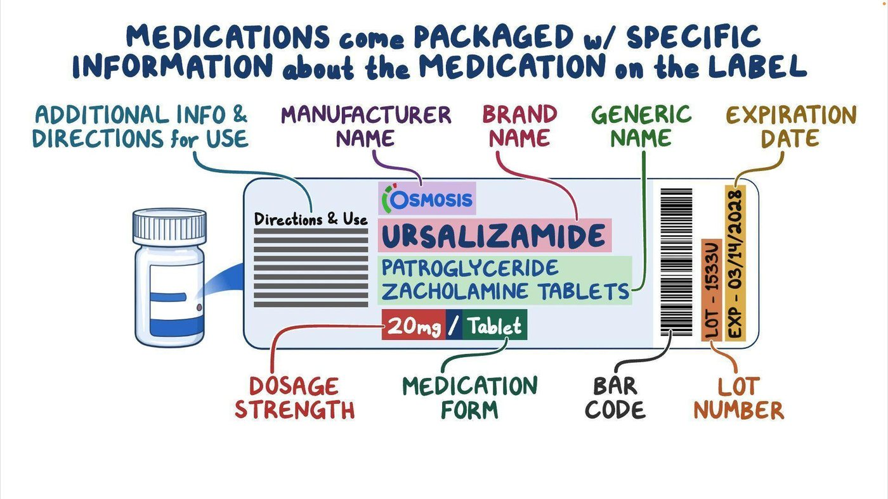
- Brand name and generic name
- Dosage strength (your "have"), and the form (tablet, capsule, oral solution)
- Route
- Expiration date and lot number
- Bar code, manufacturer, directions, storage
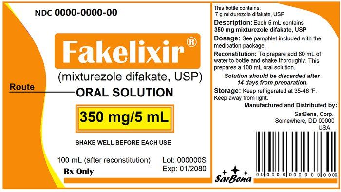
- Strength: 350 mg/5 mL (the "have" is 350 mg in a quantity of 5 mL)
- Route and form: oral solution
- Directions: shake well before each use
- Reconstitution: add 80 mL of water to make 100 mL, and discard 14 days after it's mixed
- Storage: refrigerate and keep away from light
How medications reach the client
- The provider prescribes, the pharmacist prepares and sends it to the unit, and the nurse gives it.
- Unit-dose system: each dose is packaged and labeled separately (name, strength, expiration date, often a bar code). It cuts errors and is used in acute and long-term care.
- Pharmacy bulk system: one labeled container holds many doses. Liquids are best dispensed by the pharmacy in oral syringes.
- Storage: locked medication carts (a drawer for each client, filled with a 24-hour supply; keep it locked when not in use), medication rooms, locked cabinets in client rooms (all medications except controlled substances), and dispensing machines.
Automated dispensing systems (AMDS)
- Each nurse uses a personal password or fingerprint (biometric) to get in. It controls controlled substances, cuts errors and costs, and links what's removed to the client's record.
- Take out one client's medications at a time, even when there's a line.
- Compare the label with the MAR, check the expiration date, and keep the drug in its package until you're at the bedside.
Bar code scanning
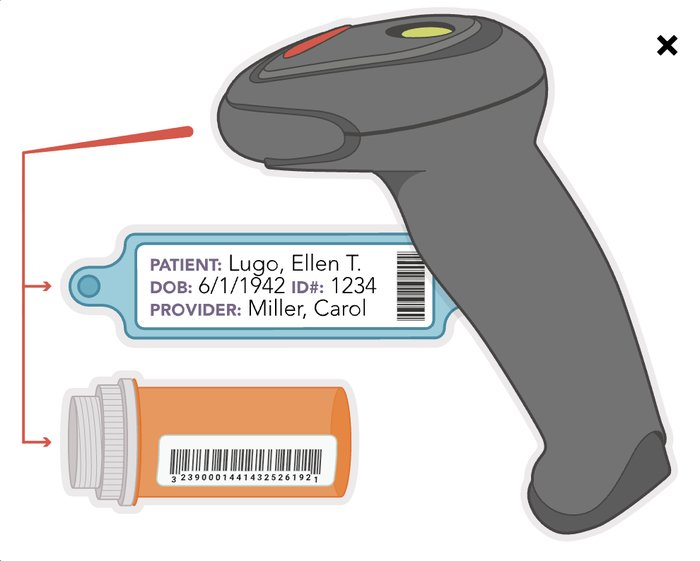
At the bedside, scan the client's wristband (and your badge) and the medication label. If the system shows a mismatch, don't give the drug until the alert is resolved. Scanning doesn't replace the nurse's own checks.
Quick check
An order reads "ceftazidime 1 g IV now." How soon do you give it?
Within 90 minutes (or per facility policy). STAT means immediately.
What do you do after taking a telephone order?
Read it back to the prescriber. The prescriber signs it within 24 hours.
Where do you find a drug's administration time: the label or the MAR?
The MAR.
The dispensing machine has a line. Can you pull medications for two clients at once?
No. One client at a time.
On a liquid label, what's the "have"?
The dosage strength, such as 350 mg in 5 mL.
Rights & errors
The checks that keep medication administration safe.
The rights of medication administration
| Right | What it means |
|---|---|
| Medication | Check the label against the MAR three times (below), and check the expiration date |
| Dose | Calculate carefully; have another nurse double-check when unsure and for high-alert drugs such as insulin and anticoagulants |
| Route | Use the ordered route; if it's missing or not the recommended route, ask the prescriber. Inject only drugs labeled for injection. |
| Time | Give it within the facility's window for that drug; some must be given around the clock to keep a steady level |
| Client | Use two client identifiers every time, such as name and date of birth, checked against the wristband and MAR |
| Documentation | Document after giving it, never before |
| Education | The client has the right to know the drug's name, dose, action, schedule and side effects |
| Reason (indication) | Know why it's ordered; assess first (for example, heart rate and blood pressure before an antihypertensive) |
| Response (evaluation) | Check whether it worked or caused an adverse reaction (vital signs, I&O (intake and output), labs) |
| Refuse | The client may refuse. Find out why, notify the provider, and document the refusal and the reason. Never force it. |
The three checks
- When you take the drug out of storage
- When you prepare it
- At the bedside, before you give it
- If the client is confused or unresponsive, compare the medical record number and birth date on the MAR with the wristband.
- Check identity every time, no matter how well you know the client.
- Stay until the client takes an oral drug; don't leave it at the bedside.
- If you give a drug at a different time than ordered, note the time and the reason.
- Document and report all adverse reactions; record new allergies on the chart, the MAR and the allergy band.
Medication errors
- A medication error is anything that causes the client to get the wrong therapy, or not get it as ordered. Skipping the rights is the most basic cause.
- Report every error, whether or not the client was harmed.
- First, check the client and keep them safe. Then notify the provider and the nurse manager.
- The nurse who made the error fills out an incident (variance) report, usually within 24 hours: client information, where and when it happened, what happened and what was done, the client's condition, and the nurse's signature.
- The incident report is not part of the medical record, and you don't mention it in your charting. It's used to improve systems, not to punish.
Quick check
When are the three label checks done?
When you take it from storage, when you prepare it, and at the bedside before giving it.
You gave the wrong dose. What's your first action?
Assess the client. Then notify the provider and nurse manager, and fill out an incident report.
Do you write "incident report filed" in the chart?
No. The report isn't part of the medical record and isn't mentioned in the charting.
A client refuses a medication. What do you do?
Ask why, notify the provider, and document the refusal and the reason.
Giving oral medications
Tablets, liquids, sublingual and buccal, and feeding tubes.
Oral medications
The most common route.
| Oral route | |
|---|---|
| Contraindications |
|
| Advantages | Safe, noninvasive, cheaper, easy to store and give |
| Disadvantages | Slower effect, absorption isn't consistent, can be inactivated in the GI tract or by the first-pass effect |
- Assess swallowing, then sit the client upright (90°) or side-lying to prevent aspiration.
- Give irritating drugs (such as some analgesics) with a little food.
- Don't mix a drug into a large amount of food or drink, in case the client can't finish it, and avoid mixing it into favorite foods.
- Avoid interacting foods such as grapefruit juice.
Empty stomach: give it 30 minutes to 1 hour before the client eats, or 2 hours after.
Do not crush
To prevent an incorrect dose, do not crush or otherwise alter:
- Enteric-coated tablets
- Sustained-release (extended-release) forms
- Any tablet with a hard shell or coating
- Any tablet with layers or speckles of different colors (combination drugs)
- Sublingual or buccal tablets
- Capsules with seals that keep the two halves from separating (gel capsules)
If it's built to work slowly, in a special place, or in layers, keep it whole.
- Split only scored tablets, with a cutting device. If it doesn't split evenly, discard it per policy (controlled substances follow the waste policy). In hospitals, the pharmacist usually splits and repackages tablets.
- Crush only when the client can't swallow and there's no liquid form: use a crushing device, mix with a small amount of food (such as applesauce) or fluid, give all of it, and clean the device before and after. Check a drug reference or the pharmacist first; ISMP has a "Do Not Crush" list.
Solid forms
| Form | What it is |
|---|---|
| Tablet | Drug pressed into a disk; a scored tablet has a line to split it |
| Enteric-coated tablet | Dissolves in the small intestine, not the stomach; swallow whole |
| Capsule | Drug in a gelatin shell |
| Sustained-release capsule | Coated beads release the drug over 12 to 24 hours; swallow whole |
| Caplet | A cross between a capsule and a tablet; easier to swallow |
| Troche (lozenge) | A flat tablet that dissolves in the mouth; not swallowed. Nothing to eat or drink 5 minutes before and after. |
Sublingual and buccal
Sublingual
- Under the tongue
- Works faster than swallowed drugs: absorbed straight into the blood, bypassing the liver
Buccal
- Between the cheek and gums (toward the back molars)
- Alternate sides each dose to prevent irritation
- Keep it in place until it dissolves; don't chew or swallow it.
- Don't eat or drink until it has dissolved.
- Wear gloves if you place it in the client's mouth. NPO clients can usually still have them (check policy).
Liquids
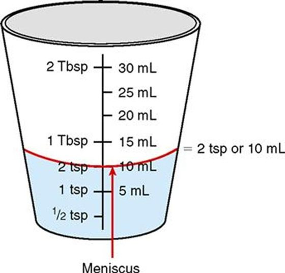
- Follow the directions for diluting and shaking. Shake suspensions right before giving them.
- Hold the bottle with the label toward your palm so drips don't smear it.
Set the cup on a flat surface at eye level and measure at the base (bottom) of the meniscus, not the edges. It needs to be precise.
| Liquid | What's in it | Example |
|---|---|---|
| Elixir | Water, alcohol, sweetener and drug | Hydrocodone and acetaminophen |
| Syrup | Water, concentrated sugar and drug | Valproic acid |
| Suspension | Fine particles that don't fully dissolve: shake it | Ampicillin, amoxicillin |
| Solution | Drug dissolved in water or 0.9% sodium chloride | Furosemide |
Measuring devices
- Medicine cup: doses of 5 to 30 mL
- Oral syringe, calibrated dropper or medicine spoon: doses under 5 mL
- Teach clients to use a calibrated device, never a kitchen spoon: household spoons aren't a standard size.
Feeding tubes (nasogastric (NG), gastrostomy, jejunostomy)
- Use the liquid form when there is one, to avoid clogging.
- Ask the provider or pharmacist before crushing; don't crush the do-not-crush forms, and don't give sublingual drugs through the tube (give them under the tongue).
- Sit the client up (Fowler's, at least 30°) and verify tube placement (pH and look of the aspirate). Check residual; if it's over 250 mL, follow policy.
- Dissolve each crushed tablet or capsule's contents completely in 15 to 30 mL of water. Give each drug separately, and never mix drugs into the feeding.
- Flush with 15 to 30 mL of water before and after each drug, and finish with a final flush of 15 to 30 mL of warm sterile water.
- Let it flow by gravity or push gently with the syringe. Keep the head of the bed up for at least 1 hour afterward.
- If the tube clogs, first try irrigating gently with the right flush.
The ATI skills module gives a bigger final flush, 30 to 60 mL of water, than the ATI chapter (15 to 30 mL). Follow the provider's order and facility policy.
| Type | Preparation | Delivery |
|---|---|---|
| Liquid | None | As a liquid |
| Tablet | Crush and dissolve | As a liquid |
| Buccal | None | Buccal |
| Sublingual | None | Sublingual |
| Liquid-filled soft gelatin capsule | Puncture and squeeze, or draw out the contents | Dilute with water or facility-approved fluid as needed |
| Enteric-coated tablet | Do not crush | Ask for another form |
| Timed-release tablet | Do not crush | Ask for another form |
| Timed-release capsule | Some can be opened and added to the feeding or given with water | Check with pharmacy, or ask for another form |
Quick check
Can you crush an extended-release tablet for a client who can't swallow?
No. Ask for another form (such as a liquid).
Where do you read a liquid dose in a medicine cup?
At eye level, at the bottom of the meniscus.
Which device for a 2.5 mL dose?
An oral syringe (or calibrated dropper or spoon): doses under 5 mL.
Which liquid must be shaken right before giving it?
A suspension.
A client takes a drug on an empty stomach. Breakfast is at 0800. When can you give it?
Between 0700 and 0730 (30 minutes to 1 hour before), or at 1000 or later (2 hours after).
Can medications be mixed into a tube feeding?
No. Give each one separately, flushing before and after.
Other routes
Skin, eyes, ears, nose, rectal, vaginal, inhaled and injections.
These other routes didn't get much lecture time, but your instructor said they're still important: pay attention to them in DCP lab.
Topical and transdermal
- Lotions, creams and ointments usually act locally. Transdermal patches act systemically (through the skin into the blood).
- Wear gloves so you don't absorb the drug. Never apply with a bare hand; use a glove, tongue blade or cotton-tipped applicator.
- Wash the skin with soap and water and pat dry first, to remove old medication and debris. Use surgical asepsis on open wounds.
- Remove the old patch (or old nitroglycerin ointment) before applying the new one, to prevent an overdose.
- Put patches on a clean, dry, hairless area and rotate sites to prevent irritation. Don't cut patches.
- Label the patch or dressing with the date, time and your initials; document where the old one came off and the new one went.
- Nitroglycerin ointment: measured in inches or centimeters on the paper strip that comes with it. Secure the strip to the skin; don't rub it in (it absorbs too fast).
- Older adults: thinner skin absorbs topical drugs faster (watch for toxicity); apply gently and remove patches slowly to avoid tearing skin.
Eye (ophthalmic)
- Eye drugs are sterile. Wipe drainage from the inner to the outer canthus first.
- Client sits up or lies supine, head tilted slightly back, looking up at the ceiling.
- Pull the lower lid down against the cheekbone to make a pocket. Hold the dropper 1 to 2 cm above and drop into the conjunctival sac, not onto the cornea. Don't touch the eye with the tip.
- Have the client close the eye gently (not squeeze). If they blink and it misses, repeat.
- Press gently on the nasolacrimal duct (inner corner) for 30 to 60 seconds to keep the drug from being absorbed into the body.
- More than one eye drug: wait at least 5 minutes between them.
- Ointment: a thin ribbon along the lower lid, from the inner to the outer canthus.
Ear (otic)
- Sterile drops are used in case the eardrum is ruptured. Warm them to room temperature (in your hands): cold drops cause dizziness and nausea.
- Clean only the outer ear; never push an applicator into the canal.
- Client sits up or lies on their side, affected ear up.
- Adults: pull the auricle (pinna) up and back to straighten the canal. Hold the dropper 1 cm above; don't touch the ear.
- Press gently on the tragus afterward (unless it hurts). Stay side-lying for 2 to 3 minutes.
- If a cotton ball is used, place it only in the outer part of the canal.
ATI's chapter says to pull the auricle "upward and back" for adults; the skills module says "up and outward." Both mean up. (Children under 3: down and back.)
Nose (nasal)
- Have the client blow their nose gently first. Use medical asepsis.
- Drops: client lies supine, head positioned so the drug reaches the right area; breathe through the mouth, stay supine and don't blow the nose for 5 minutes. Keep the dropper from touching the nares.
- Spray: client sits upright with the head slightly back. Prime the spray if needed, point the nozzle away from the center of the nose, and spray while the client breathes in through the nose. No nose-blowing for several minutes.
- Long-term decongestant spray use causes rebound congestion (swelling gets worse).
Rectal suppositories
- Not for clients after rectal surgery or with active rectal bleeding.
- Keep suppositories refrigerated. Don't cut them to split a dose: the drug may not be spread evenly.
- Position: left lateral (left Sims'). Gloves, clean technique; lubricate the rounded end with water-soluble lubricant. Have the client breathe slowly through the mouth to relax the sphincter.
- Insert it past the internal anal sphincter, against the rectal wall, not into stool.
- Client stays flat or on the left side for at least 5 minutes.
Vaginal
- Position: supine with knees bent and feet flat near the hips (dorsal recumbent). Provide perineal care if needed.
- Insert along the back (posterior) wall: suppositories 7.5 to 10 cm (3 to 4 in); creams, jellies and foams 5 to 7.5 cm (2 to 3 in).
- A perineal pad can catch extra drainage. Wash a reusable applicator with soap and water.
- Teach: use the full course, even during menstruation; no intercourse until an antifungal course is done.
How long to stay supine afterward: at least 5 minutes (ATI chapter) or about 10 minutes (ATI skills module).
Inhaled
MDI (metered-dose inhaler)
- Shake it 5 or 6 times
- Breathe out, then close the lips around the mouthpiece (or hold it 2 to 4 cm away)
- Press as you start a slow, deep breath in (3 to 5 seconds)
- Hold the breath 10 seconds, then breathe out slowly through pursed lips
- Wait at least 1 minute between puffs
- Spacer: for clients who have trouble timing the puff with the breath; more drug reaches the lungs, less stays in the mouth
DPI (dry-powder inhaler)
- Don't shake it
- Load the dose per the directions
- Breathe out completely (not into the device), then take a deep breath in through the mouth
- Hold the breath 5 to 10 seconds
- Wait as long as the provider says between puffs
- Corticosteroid inhaler: rinse the mouth with water (or brush teeth) afterward to prevent thrush (oral candidiasis, a fungal mouth infection).
- Nebulizer: turns liquid drug into a mist the client breathes in for a few minutes; use an aerosol mask if the client can't hold the mouthpiece.
MDI: Mix it (shake). DPI: Don't shake.
Injections
| Route | Use | Needle | Angle | Volume |
|---|---|---|---|---|
| Intradermal (ID) | TB (tuberculosis) skin tests, allergy tests | 25 to 27 gauge, 1/4 to 5/8 in, tuberculin syringe | 10° to 15°, bevel up; a small bleb forms; don't massage | 0.01 to 0.1 mL |
| Subcutaneous | Small doses of nonirritating, water-soluble drugs: insulin, heparin | 25 to 31 gauge, 3/8 to 5/8 in | 45° to 90° (90° for clients with obesity); pinch up the skin | No more than 1.5 mL |
| Intramuscular (IM) | Irritating drugs, oils, suspensions | 18 to 25 gauge, 5/8 to 1.5 in | 90° | Usually 1 to 3 mL; split larger doses into two sites |
- IM sites: ventrogluteal is preferred (and for more than 2 mL). The deltoid holds only 1 mL. The vastus lateralis is used for infants and toddlers. The dorsogluteal isn't recommended: it's close to the sciatic nerve.
- Subcutaneous sites: abdomen, upper hips, back of the upper arms, thighs (enough fat).
- Z-track for IM drugs that irritate or stain the skin (iron): keeps the drug from leaking back into the tissue.
- Use a tuberculin syringe for volumes under 0.5 mL, and an insulin syringe for insulin.
- Rotate sites and document each one. Avoid sites that are swollen, inflamed, or have moles, birthmarks or scars.
- Throw away sharps in a puncture-proof container.
- Injections: advantages are faster, more reliable absorption and depot (long-acting) forms; disadvantages are cost, pain, tissue or nerve damage, and infection.
IV
- Fastest onset; immediate absorption; precise control; large volumes; dilutes irritating drugs.
- Because it's immediate, a wrong dose or drug is dangerous: monitor the client right away. Risks: infection and embolism, phlebitis and infiltration.
- Usual catheter sizes: 16 gauge for trauma, 18 gauge for surgery and blood, 22 to 24 gauge for older adults, children and stable clients.
Epidural
Opioid analgesia (morphine, fentanyl) through a catheter in the epidural space, on an infusion pump. Watch for hypotension and respiratory depression.
Quick check
Where do eye drops go?
Into the conjunctival sac (lower lid pocket), not onto the cornea.
How do you straighten an adult's ear canal?
Pull the auricle up and back.
What do you do with the old transdermal patch?
Remove it before applying the new one, at a different site.
Which inhaler do you shake: MDI or DPI?
MDI. Don't shake a DPI.
Which IM site is preferred, and which one should you avoid?
Ventrogluteal is preferred; avoid the dorsogluteal (close to the sciatic nerve).
What should you see after an intradermal injection, and should you massage it?
A small bleb; don't massage the site.
A client uses a steroid inhaler. What should they do afterward?
Rinse the mouth with water to prevent thrush.
Med math
Oral, weight-based, safe-dose and IV calculations.
The Medication Calculation Competency
20 problems, 2 of each type, in 40 minutes. These are the 10 types:
- Calculating flow rates (mL/hr)
- Recommended dosages
- Dosages by weight
- Divided doses
- Metric/household conversion
- Equivalent dosages
- Solid doses
- Liquid doses
- Manual IV rates (gtt/min, drops per minute)
- Continuous IV medication infusions
The basics from Week 9 (the 24-hour clock, the three setup methods, rounding) are in the Week 9 guide. Each example below is worked one step at a time.
The three setup methods
Doses from a tablet or a liquid, and IV problems with several steps, are set up three ways below. You only need one: pick the method you use and follow that row. Every method gives the same answer. Simple conversions, weight math and mL/hr are just multiply or divide, so they're shown as plain steps.
HaveQuantity = DesiredX
X = DesiredHave × Quantity
gtt/min = Volume (mL) × drop factor (gtt/mL)Time (min)
Used for drip rates, which have no have and quantity; it takes the place of desired over have there.
X = QuantityHave × Desired1 (units cancel top and bottom)
Rounding
Know your rounding. The test and the NCLEX always tell you what to round to.
| Rule | Example |
|---|---|
| Doses less than 1: round to the nearest hundredth | 0.746 → 0.75 |
| Doses greater than 1: round to the nearest tenth | 1.38 → 1.4 |
| The digit to the right is 5 or more: round up | 1.25 → 1.3 |
| The digit to the right is less than 5: leave the number alone | 0.023 → 0.02 |
- Leading zero always: write 0.5, never .5.
- No trailing zero: write 5, never 5.0.
- Round only at the end. Carry the unrounded numbers (such as the weight in kg) all the way through.
- On the practice quizzes, type only the number; the unit is shown beside the box.
Conversions to know
| Weight | Volume |
|---|---|
|
|
ATI's conversion list still includes grains (1 gr = 60 mg). Grains are apothecary units on the Do Not Use list (see Week 9), so this guide doesn't use them.
Types 5 & 6: conversions and equivalent dosages
Bigger unit to smaller: multiply
- 1 g = 1,000 mg, so 0.5 g × 1,000 = 500 mg
- 1 mg = 1,000 mcg, so 0.2 mg × 1,000 = 200 mcg
- 1 Tbsp = 15 mL, so 2 Tbsp × 15 = 30 mL
- 1 kg = 2.2 lb, so 70 kg × 2.2 = 154 lb
Smaller unit to bigger: divide
- 1 mg = 1,000 mcg, so 250 mcg ÷ 1,000 = 0.25 mg
- 1 g = 1,000 mg, so 1,500 mg ÷ 1,000 = 1.5 g
- 1 tsp = 5 mL, so 20 mL ÷ 5 = 4 tsp
- 1 kg = 2.2 lb, so 176 lb ÷ 2.2 = 80 kg
Check it: going to a smaller unit, the number gets bigger (0.5 g is 500 mg); going to a bigger unit, the number gets smaller.
Give 3 Tbsp of a medication. How many mL?
- 1 Tbsp = 15 mL. Tbsp to mL is bigger to smaller, so multiply
- 3 × 15 = 45
Answer: 45 mL
Give 30 mL of a medication. How many Tbsp?
- 1 Tbsp = 15 mL. mL to Tbsp is smaller to bigger, so divide
- 30 ÷ 15 = 2
Answer: 2 Tbsp
Give 500 mg of a medication. How many mcg is that?
- 1 mg = 1,000 mcg. mg to mcg is bigger to smaller, so multiply
- 500 × 1,000 = 500,000
Answer: 500,000 mcg
Give 250 mcg of a medication. How many mg is that?
- 1 mg = 1,000 mcg. mcg to mg is smaller to bigger, so divide
- 250 ÷ 1,000 = 0.25
- Leading zero: 0.25, not .25
Answer: 0.25 mg
Type 7: solid doses
Set it up with whichever of the three methods you use.
Give 30 mg of ketorolac PO. You have 15 mg tablets. How many tablets?
- Have = 15 mg, quantity = 1 tablet, desired = 30 mg
15 mg1 tablet = 30 mgX → 15X = 30 → X = 2
30 mg15 mg × 1 tablet = 2
X tablets = 1 tablet15 mg × 30 mg1 = 2
Makes sense: two 15 mg tablets make 30 mg.
Answer: 2 tablets
Give phenytoin 0.2 g PO. You have 100 mg capsules. How many capsules? Round to the nearest whole number.
- g and mg don't match. 1 g = 1,000 mg, so 0.2 g × 1,000 = 200 mg (dimensional analysis does this inside the chain)
100 mg1 capsule = 200 mgX → 100X = 200 → X = 2
200 mg100 mg × 1 capsule = 2
X capsules = 1 capsule100 mg × 1,000 mg1 g × 0.2 g1 = 2
Answer: 2 capsules
Type 8: liquid doses
Same setup, but the quantity is the volume on the label (such as 5 mL).
Give 400 mg of amoxicillin PO. You have amoxicillin 200 mg/5 mL. How many mL?
- Have = 200 mg, quantity = 5 mL, desired = 400 mg
200 mg5 mL = 400 mgX → 200X = 2,000 → X = 10
400 mg200 mg × 5 mL = 10
X mL = 5 mL200 mg × 400 mg1 = 10
Makes sense: 400 mg is twice 200 mg, so twice 5 mL.
Answer: 10 mL
Give heparin 8,000 units subcutaneously. You have heparin 10,000 units/mL. How many mL? Round to the nearest tenth.
- Have = 10,000 units, quantity = 1 mL, desired = 8,000 units
10,000 units1 mL = 8,000 unitsX → 10,000X = 8,000 → X = 0.8
8,000 units10,000 units × 1 mL = 0.8
X mL = 1 mL10,000 units × 8,000 units1 = 0.8
Leading zero: 0.8, not .8. Makes sense: less than the 10,000 units in 1 mL, so less than 1 mL.
Answer: 0.8 mL
Weight conversions
- kg to lb: multiply by 2.2. lb to kg: divide by 2.2. The kilogram number is always the smaller one.
- Some doses are based on the client's admission weight. Weight can change during a stay; if you aren't sure which weight the provider used, ask.
A client weighs 75.4 kg. How many pounds? Round to the nearest tenth.
- kg to lb: multiply by 2.2
- 75.4 × 2.2 = 165.88
- Round to the nearest tenth: the hundredths digit is 8, so round up
Answer: 165.9 lb
An infant weighs 10 lb 3 oz. How many pounds? Round to the nearest tenth.
- Ounces to pounds: divide by 16. 3 ÷ 16 = 0.1875
- Add the pounds: 10 + 0.1875 = 10.1875
- Round to the nearest tenth: the hundredths digit is 8, so round up
Answer: 10.2 lb
A child weighs 50 lb 7 oz. How many kilograms? Round to the nearest tenth.
- Ounces to pounds: 7 ÷ 16 = 0.4375, so 50.4375 lb (don't round yet)
- Pounds to kilograms: divide by 2.2. 50.4375 ÷ 2.2 = 22.926…
- Round to the nearest tenth: the hundredths digit is 2, so leave it
Answer: 22.9 kg
Type 3: dosages by weight
- Used for many children's doses and some adult drugs: enoxaparin, vancomycin, amoxicillin.
- It makes sure the client gets the right dose for their size and doesn't become toxic.
- Take the client's weight in kg and multiply by the dose.
A client is ordered amoxicillin oral suspension 30 mg/kg/day and weighs 25 kg. How many mg a day?
- Already in kg
- 25 kg × 30 mg/kg = 750
Answer: 750 mg/day
Enoxaparin 1.5 mg/kg subcutaneously daily. The client weighs 155 lb. How many mg? Round to the nearest whole number.
- Pounds to kilograms: 155 ÷ 2.2 = 70.4545… kg (don't round yet)
- 70.4545… kg × 1.5 mg/kg = 105.68…
- Round to the nearest whole number: the tenths digit is 6, so round up
Answer: 106 mg
Type 4: divided doses
- Work out the total dose for 24 hours.
- Divide it by the number of doses a day.
Doses a day = 24 ÷ the hours between doses: every 6 hr = 4 doses, every 8 hr = 3, every 12 hr (BID, twice a day) = 2.
Vancomycin oral suspension 40 mg/kg/day in 3 divided doses. The client weighs 86 kg. (1) mg a day? (2) mg per dose, rounded to the nearest whole number?
- (1) Day: 86 kg × 40 mg/kg = 3,440 mg/day
- (2) Per dose: 3,440 ÷ 3 = 1,146.666…
- Round to the nearest whole number: the tenths digit is 6, so round up
Answer: 3,440 mg/day; 1,147 mg per dose
Enoxaparin 1.5 mg/kg/day, given BID. The client weighs 200 lb. (1) mg in 24 hours? (2) mg per dose? Round each to the nearest whole number.
- Pounds to kilograms: 200 ÷ 2.2 = 90.909… kg
- (1) Day: 90.909… kg × 1.5 mg/kg = 136.36…, rounds to 136
- (2) Per dose (BID = 2 doses), carrying the unrounded day total: 136.36… ÷ 2 = 68.18…, rounds to 68
Answer: 136 mg/day; 68 mg per dose
Vancomycin oral suspension 40 mg/kg/day divided every 6 hours. The client weighs 250 lb. Available: vancomycin oral suspension 250 mg/5 mL. How many mL per dose?
- Weight: 250 lb ÷ 2.2 = 113.6363… kg (don't round yet)
- Total a day: 113.6363… kg × 40 mg/kg = 4,545.4545… mg
- Every 6 hours = 4 doses: 4,545.4545… ÷ 4 = 1,136.3636… mg per dose
- mL per dose (dimensional analysis can do all of this in one chain):
250 mg5 mL = 1,136.36… mgX → 250X = 5,681.81… → X = 22.727…
1,136.36… mg250 mg × 5 mL = 22.727…
X mL = 5 mL250 mg × 40 mg1 kg · day × 1 day4 doses × 1 kg2.2 lb × 250 lb1 = 22.727…
Now round to the nearest whole number: the tenths digit is 7, so round up.
Answer: 23 mL per dose
Type 2: recommended (safe) dosages
Doses can vary with age, weight, diagnosis, condition and route. Check every dose against a current drug reference:
- Look up the recommended dose or range, and note whether it's per dose or per day.
- If it's by weight, convert the weight to kg and multiply by the low and the high end.
- Put the ordered dose in the same terms (per dose or per day) and compare.
- Above the range: unsafe, hold it and contact the provider. Below the range: may not work (nontherapeutic), so check with the provider too.
Recommendation: ketorolac 15 to 30 mg IM four times daily, not to exceed 120 mg/day.
- Order: 30 mg IM q4h PRN. Every 4 hours is up to 6 doses: 30 × 6 = 180 mg/day. That's over 120 mg/day: not safe.
- Order: 15 mg IM q4h PRN. 15 × 6 = 90 mg/day. Each dose is in the 15 to 30 mg range and the day stays under 120 mg: safe.
Every 4 hours is more often than the "four times daily" in the reference. The daily limit is what makes the 30 mg order unsafe; if an order's frequency doesn't match the reference, check with the provider.
Cefaclor, adults: 250 to 500 mg every 8 hours. What's the daily safe dose range?
- Every 8 hours = 3 doses a day
- 250 × 3 = 750 and 500 × 3 = 1,500
Answer: 750 to 1,500 mg/day
A client is ordered 350 mg of medication X oral suspension. The safe range is 7.5 to 15 mg/kg/dose, and the client weighs 23 kg. (1) The safe dose range, rounded to the nearest tenth? (2) Is the order safe?
- Low: 23 kg × 7.5 mg/kg = 172.5 mg
- High: 23 kg × 15 mg/kg = 345 mg
- Compare: the order (350 mg) is more than the high end (345 mg)
Answer: 172.5 to 345 mg per dose; 350 mg is not safe
Type 1: flow rates on a pump (mL/hr)
An infusion pump runs in mL per hour: Volume (mL)Time (hr). If the time is in minutes, change it to hours (÷ 60) or multiply by 60 min1 hr.
Infuse D5W (dextrose 5% in water) 500 mL over 4 hours. Set the pump to how many mL/hr? Round to the nearest whole number.
- mL/hr = volume ÷ time: 500 mL ÷ 4 hr = 125
Answer: 125 mL/hr
Cefotaxime 1 g in 100 mL 0.9% sodium chloride over 45 minutes. How many mL/hr? Round to the nearest whole number.
- Minutes to hours: 45 ÷ 60 = 0.75 hr
- mL/hr = volume ÷ time: 100 mL ÷ 0.75 hr = 133.33…
- Round to the nearest whole number: the tenths digit is 3, so leave it
Answer: 133 mL/hr
Type 9: manual IV rates (gtt/min)
Without a pump, the nurse sets the roller clamp and counts the drops falling in the drip chamber for 1 minute. The drop factor (gtt/mL) is on the tubing package.
gtt/min = Volume (mL) × drop factor (gtt/mL)Time (min)
Infuse LR (lactated Ringer's) 1,500 mL over 10 hours. The drop factor is 15 gtt/mL. How many gtt/min? Round to the nearest whole number.
- For the formula or ratio and proportion, change hours to minutes: 10 hr × 60 = 600 min
1,500 mL600 min = X mL1 min → X = 2.5 mL/min → 2.5 mL/min × 15 gtt/mL = 37.5
gtt/min = 1,500 mL × 15 gtt/mL600 min = 37.5
X gtt/min = 15 gtt1 mL × 1,500 mL10 hr × 1 hr60 min = 37.5
Round to the nearest whole number: the tenths digit is 5, so round up.
Answer: 38 gtt/min
You can't give half a drop, so gtt/min is always a whole number.
Type 10: continuous IV medication infusions
Some drips are ordered by weight per hour (such as units/kg/hr). Work out the dose per hour, then the mL per hour from the bag's concentration.
Heparin infusion at 10 units/kg/hr. The client weighs 150 lb. Available: heparin 2,500 units/100 mL. How many mL/hr? Round to the nearest whole number.
- Weight: 150 lb ÷ 2.2 = 68.1818… kg
- Dose per hour: 68.1818… kg × 10 units/kg/hr = 681.8182… units/hr (dimensional analysis can skip these two steps)
2,500 units100 mL = 681.8182… unitsX → 2,500X = 68,181.82… → X = 27.27…
681.8182… units2,500 units × 100 mL = 27.27…
X mL/hr = 100 mL2,500 units × 10 units1 kg · hr × 1 kg2.2 lb × 150 lb1 = 27.27…
Round to the nearest whole number: the tenths digit is 2, so leave it.
Answer: 27 mL/hr
Quick check
0.9% NS (normal saline) 100 mL over 6 hours. Pump rate? Round to the nearest whole number.
100 ÷ 6 = 16.67, so 17 mL/hr.
Medication X is recommended at 20 to 30 mg/kg once daily. The client weighs 75 lb and is ordered 850 mg. Safe?
75 ÷ 2.2 = 34.09 kg; range 681.8 to 1,022.7 mg. 850 mg is inside it: safe.
25 mcg/kg ordered for a 50 kg client. How many mcg?
50 × 25 = 1,250 mcg.
2,400 mg a day PO in 4 divided doses. mg per dose?
2,400 ÷ 4 = 600 mg.
1,000 mg PO BID ordered; 250 mg/5 mL available. mL per dose?
1,000 ÷ 250 × 5 = 20 mL.
500 mg ordered; 250 mg tablets available. How many tablets?
2 tablets.
250 mL over 2 hours with 60 gtt/mL tubing. gtt/min?
250 × 60 ÷ 120 = 125 gtt/min.
Heparin 15,000 units subcutaneously; 20,000 units/mL available. mL? Round to the nearest tenth.
15,000 ÷ 20,000 = 0.75, so 0.8 mL.
Vancomycin 1 g in 100 mL D5W over 45 minutes, 10 gtt/mL tubing. gtt/min? Round to the nearest whole number.
100 × 10 ÷ 45 = 22.2, so 22 gtt/min.